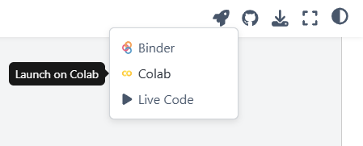

Getting Started#
This content is an open resource for use in whichever platform is most accessible to you. The programming language we use is R, but it can be ran on any of these options: Google Colab, JupyterHub, or in Rstudio. See more details here on how to access these.
Google Colab#
Google Colab is a free web based platform for running and sharing code. In the following pages, you’ll be able to open any page with code on it in Google Colab using the rocketship icon in the upper right hand corner.

Read more about Google Colab here.
Jupyter Notebook#
Jupyter Notebook is a web application for computational documents (you can identify these file types that end in .ipynb). Note that if using on your personal computer, you will need to have the R kernel installed.
This is a good option if your university already has a JupyterHub that you have access to.
Read more about Jupyter Notebook here.
R and RStudio#
If you do not already have R and Rstudio on your computer, you will need to download them. If you do have them, start at step 3, installing and loading the packages.
About Rmarkdown.
Download and install R and RStudio
Go to the R website. Then, under the Getting Started section, click on the link that says download R.
R software is downloaded from a CRAN (Comprehensive R Archive Network) mirror. For the fastest download, scroll to your country, then select the CRAN link that is closest to you, geographically. For example, in Humboldt Co, California, USA the closest CRAN would be https://ftp.osuosl.org/pub/cran/, hosted by Oregon State University in Corvallis, Oregon, USA.
From your local CRAN, select the download link (“Download R for”) that matches your computer operating system (Windows, Mac).
Windows: Click the link that says install R for the first time. Then, within the gray box, click the link that says Download R x.y.z for Windows, where x, y, and z are different numbers that designate the current version of R. This should start the file download. Proceed normally as with any new PC program, following the automated download instructions.
Mac: Under the section labeled “Files”, click on the first blue link that ends in .pkg. This is the most recent R binary file. This should start the file download. Proceed normally as with any new Mac application, following the automated download instructions.
Go to the RStudio website. Scroll to the bottom of the page.
Under Installers for Supported Platforms, select the link that matches your computer operating system (Windows, Mac) to download and install RStudio.
Windows: Double-click the .exe file and proceed normally as with any new PC program, following the automated install instructions.
Mac: Double-click the .dmg file; this will open a new window in your desktop. Drag the RStudio icon to the Applications folder to install it in your computer.
Install packages used in this workshop. Within R, researchers have developed “packages” that group together code and functions to allow you to easily perform different types of computing tasks. You’ll need to use multiple packages during the module activities, and it will be easiest to go ahead and install all of them ahead of time.
Now that R and RStudio are installed, open RStudio. The default window on the left of the screen is called the Console, and you can write commands in this window. The two windows on the right include tabs that you can view to see the history of code you’ve already run and your workspace, plots of figures you’ve made with your code, packages you’ve installed, and the files you have open in your working directory.
To install the packages, copy and paste the following lines of code to the right of the > in the Console, then press Enter. Note: You need to be connected to the internet to complete the package installation.
install.packages("tidyverse")
install.packages("lubridate")
As you’re installing the packages, you might see a lot of red output messages. However, you can check that they downloaded successfully by then running the following scripts to load the packages:
library(tidyverse)
library(lubridate)
To check if the packages have installed correctly, navigate over to the “Packages” tab in the bottom right window of RStudio and see if there is a checked box next to tidyverse, janitor, and lubridate. Note that different workshops may require different packages, and you can always run install.packages() and library() to get new ones.
After loading tidyverse you may receive a message in your console about conflicts - this means that there are functions with the same name but from different packages. For these activities, it should not matter because we will mainly be using tidyverse. You will need to rerun loading the packages each time you restart RStudio, and you’ll find the first step in our workflows always start with that.
References
The text in this section was adopted from the MacrosystemsEDDIE Teaching Materials in ‘R You Ready for EDDIE? Module 1’. Check out their awesome work on modules for using R for ecological forecasting here.
Carey, C.C., S. Aditya, K. Subratie, V. Daneshmand, R. Figueiredo, and K.J. Farrell. 24 August 2020. Macrosystems EDDIE: Climate Change Effects on Lake Temperatures. Macrosystems EDDIE Module 1, Version 2. http://module1.macrosystemseddie.org. Module development was supported by NSF DEB 1245707, ACI 1234983, EF 1702506, DBI 1933016, and DEB 1926050.
R Packages
Grolemund G, Wickham H (2011). “Dates and Times Made Easy with lubridate.” Journal of Statistical Software, 40(3), 1–25. https://www.jstatsoft.org/v40/i03/.
Wickham H, Averick M, Bryan J, Chang W, McGowan LD, François R, Grolemund G, Hayes A, Henry L, Hester J, Kuhn M, Pedersen TL, Miller E, Bache SM, Müller K, Ooms J, Robinson D, Seidel DP, Spinu V, Takahashi K, Vaughan D, Wilke C, Woo K, Yutani H (2019). “Welcome to the tidyverse.” Journal of Open Source Software, 4(43), 1686. doi:10.21105/joss.01686.
Resources to keep learning R#
Swirl Tutorials - R package makes it fun and easy to learn R programming and data science
R Textbooks (open access) - https://www.rstudio.com/resources/books/
Hands-On Programming with R by Garrett Grolemund - introduction to R
R for Data Science by Hadley Wickham (2nd Edition) - introduction to tidyverse and data visualization
Fundamentals of Data Visualization by Claus O. Wilke - not R specific, but is a great resources for communication with data visualization, and has many examples
R Cheatsheets - helpful pdfs that focus on commonly used packages including ggplot, lubridate, and more. Also available in spanish
Stack Overflow - need help troubleshooting or trying new methods? Search for common issues here, or post a question.
Kaggle - tutorials, workshops, and competitions to keep learning R, also includes Python